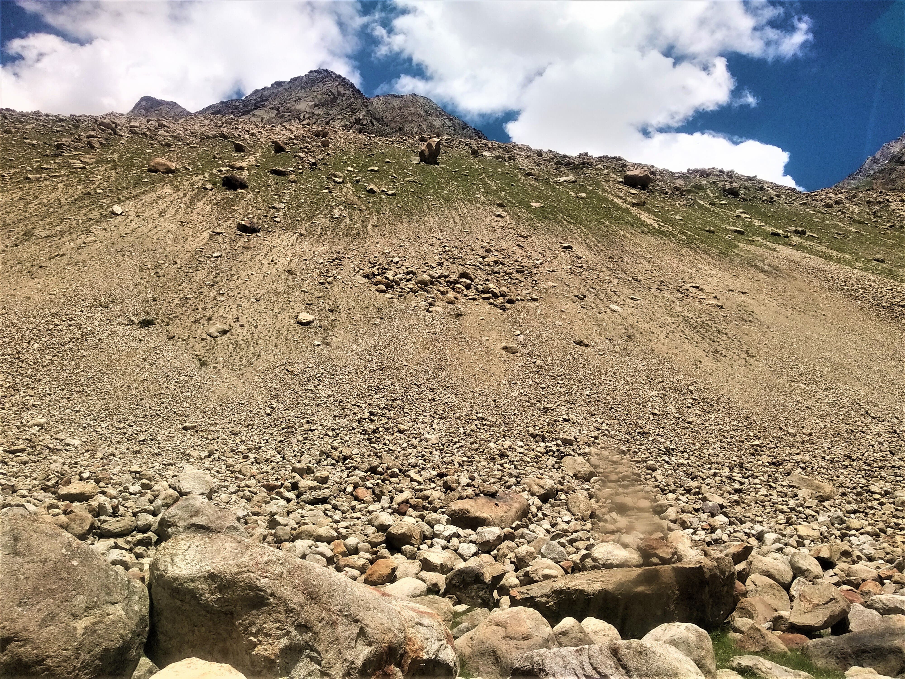
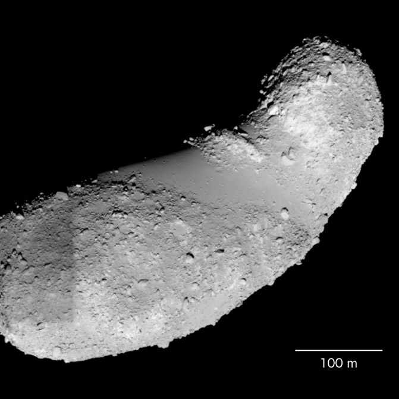

I recently took a trip to Spiti in Himachal Pradesh, a region on the leeward side of the mountain range that separates it from Manali, which is lush green. The mountains of Spiti are greatly barren and devoid of vegetation — I could not spot a single tree. This is primarily because of the lack of rainfall. Naturally, the landscape is very granular. Having spent some time learning about granular materials during my Masters, this place appeared very relatable to me.
On the slopes, you'll see something interesting: landslides. Not the typical ones where a chunk of landmass scrapes off the side of a mountain. These are shallow landslides with polydisperse grains. But you know what is even more interesting? Segregation. The bigger rocks and boulders are down at the bottom, and the fine particles are up the slope — a clear pattern of grain segregation. You'll also spot small landslides somewhere mid-slope where a similar pattern is repeated.

Granular segregation on a Spiti hillside — larger boulders at the toe, fine grains above
Why does this happen?
Well, it's not a new discovery, unfortunately. Scientists and researchers have spent years figuring this out. One may check this review article for an in-depth treatment. Otherwise, here is an explanation for the layperson.
When a granular mixture moves down a slope, the bumpy base adds excitation to the flow in the direction normal to the base, against gravity. Additionally, different layers of the flow move at different velocities due to frictional resistance from the base — this is called shearing. Because the grains collide with one another due to the energy inputted, the smaller grains keep falling into the voids that form beneath them. As a result, the bigger grains rise to the top as the landslide progresses downwards.
Bigger grains have greater inertia and are hence slowed down less by frictional effects. They move ahead and reach the bottom of the slope much faster. The small particles experience greater retardation and lag behind, forming the graded pattern you see on the hillside.
Beyond Earth
There are extra-terrestrial instances of granular segregation as well. Asteroid Itokawa, for example, shows a clear spatial separation of large boulders and fine regolith on its surface — thought to be a result of similar size-sorting processes acting over long timescales under the asteroid's weak gravity.

Asteroid Itokawa — boulder-rich and smooth fine-grained regions clearly delineated. Credit: JAXA/ISAS
The slightly heavier scientific terms for these phenomena are the Brazil Nut Effect, Kinetic Sieving, and Squeeze Expulsion — each explaining different aspects of size sorting under combinations of gravitation, convection, and other physical parameters. But that is for another day.